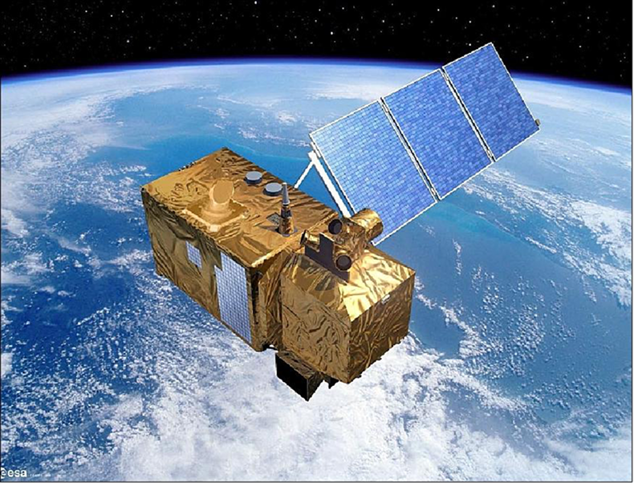
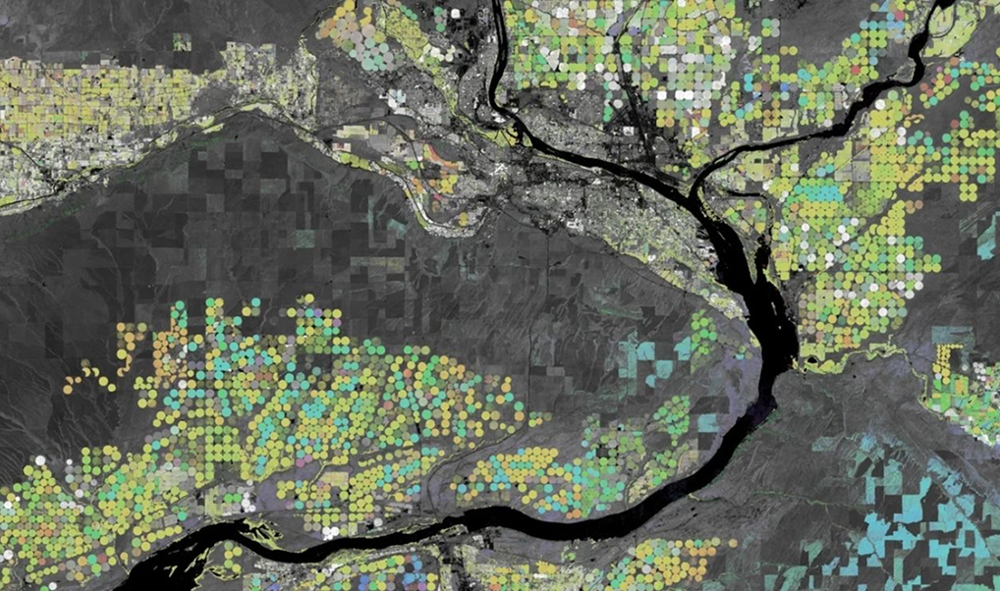
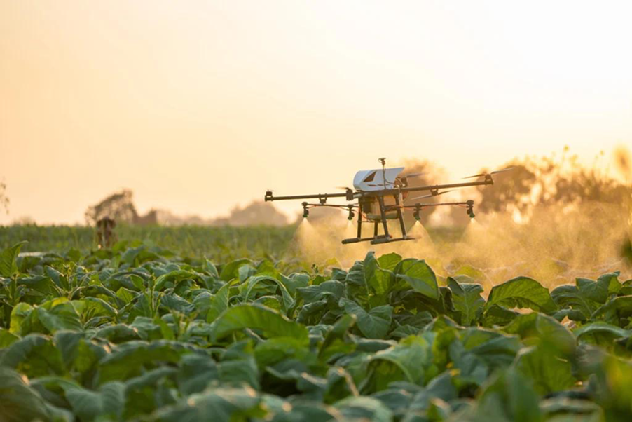

Sentinel-2
Monitoramento da lavoura por imagens de satélite.
Detecte secas, pragas, queimadas e necessidades de irrigação em tempo real para aumentar a produtividade e reduzir perdas no campo.
Conheça a solução
Utilizamos tecnologias avançadas para monitorar sua lavoura em tempo real, fornecendo dados precisos para uma gestão mais eficiente e segura.
O projeto propõe uma plataforma agrícola inteligente que utiliza satélites, Inteligência Artificial e sensores para monitorar lavouras em tempo real. A solução auxilia produtores na identificação de riscos, na otimização de recursos e na tomada de decisões mais rápidas e eficientes.
Ver mais
Monitoramento da lavoura por imagens de satélite.

Processamento e análise de dados geoespaciais.

Ações automáticas baseadas em análises do sistema.